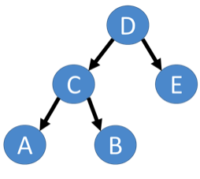
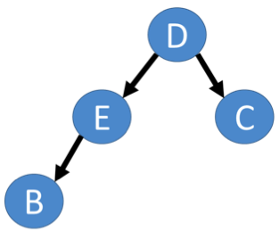
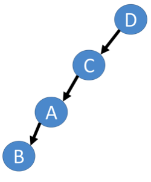
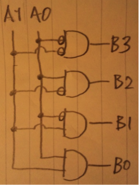
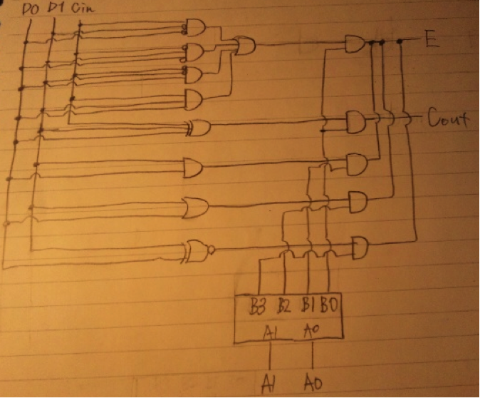

・横型探索
開始ノードに近いノードから探索する方法。待ち行列により実装可能。
１,開始ノードを待ち行列に加える。
２,待ち行列が空なら、探索失敗として探索終了
３,待ち行列の先頭ノードを取り除く。
４,取り除いたノードがゴールノードなら探索完了。
５,取り除いたノードに子があるなら、その子ノードを待ち行列の後ろに追加する。
６,２に戻る。
・縦型探索
目的ノードが見つかるか、子ノードが無い行き止まりのノードまで進み続ける探索法。スタックにより実装可能。
1,開始ノードをスタックする。
2,スタックが空なら、探索失敗として探索終了
3,スタックからノードをポップする。
4,ポップしたノードが目的ノードなら探索完了。
5,ポップしたノードに子ノードがあるなら全てスタックする。
6,2に戻る
●横型探索
○利点
・浅いノードに目的のノードがあることが分かっている場合は効率がよい。
・確実に解を見つけられる。
○欠点
・記憶効率が酷く悪い。
・目的ノードが深ければ深いほど探索効率が悪い。
・分枝限定法などの探索高速化手法が実装困難
●縦型探索
○利点
・記憶領域の効率が最小限で済む。
・深いノードに目的ノードがあることが分かっている場合は効率がよい。
・分枝限定法などの探索高速化アルゴリズムを容易に実装可能。
○欠点
・目的ノードが探索箇所の逆側にあればあるほど例え浅くとも発見が遅い。
関数を再帰的に呼び出す度にデータをコールスタックに退避しなければならないため、退避時間が掛かると共に記憶領域を圧迫する。限界を越えるとスタックオーバーフローが発生する。
末尾再帰関数に直すと、
int factorial(int a, int b){
if(b==0)return a;
return factorial(a*b,b-1);
}
※factorial(1,10) → 10!
int gcd(int x, int y){
int tmp;
loop:
if(y == 0) return x;
tmp = x;
x = y;
y = tmp%y;
goto loop;
}
共有ネットワーク上の、別のコンピュータ上にあるサブルーチンを実行することを可能にする技術。このとき、ローカルメモリにあるサブルーチンを実行するときのように、遠隔にあることを意識せずに呼び出せる。引数を目的のサブルーチンを持つコンピュータに送信した後、実行させ、結果のみを受信する。
各ノードの分散したメモリ領域を仮想的に１つとみなして大容量のメモリ領域を実現する方式。
クラスタは自宅内のコンピュータだったり、大学内の全てのコンピュータだったり、東京都内全てのコンピュータだったりその括り方は様々であるが、どのように括るにせよ、クラスタとして括られた１つ以上のコンピュータを仮想的に１つのコンピュータのように振舞わせる技術。クラスタに仕事を依頼すれば、クラスタ内での様々な細かい処理はクラスタ自身に任せてよい。1台が障害などで停止してもシステム全体が止まることはなく、処理を続行したまま修理や交換が行える。
通常広いネットワークを介して複数のコンピュータを結ぶことで、仮想的な高性能コンピュータを構成し、ユーザーはそこから必要なだけの処理能力や、記憶容量を取り出して使うシステム。例え１台１台の性能が低くても、並列処理を行わせることで高い処理能力を実現する。
全体としては一つの目的のためのプログラムを、複数の処理の並行した流れとしてとらえたときの、一つ一つの処理のことをスレッドと呼ぶ。
e.g 多重スレッドプログラミング
メールソフトウェアはメールを書きながら、メールが着ているかどうかを常にチェックしていて欲しい。
スレッド１：メール入力スレッド
スレッド２：メール着信監視スレッド
プロセスが複数の処理を平行して実行したい場合はスレッドを生成し、プロセスが持つ資源、仮想メモリ空間を使って処理を行う。スレッドは親であるプロセスの資源を使って仕事をする子供のようなものである。
不可分操作とも言う。以下の２つの条件を満たす命令のことである。
・アトミック命令の全操作が完了するまで、途中の状態を他のプロセスが観測することが出来ない。
・操作が失敗したらアトミック命令を行う前の状態に戻る。
・a,b,c,d,e
・a,b,d,c,e
・a,d,b,c,e
・d,a,b,c,e
・a,b,d,e,c
・a,d,b,e,c
・d,a,b,e,c
・a,d,e,b,c
・d,a,e,b,c
・d,e,a,b,c
・P(S)
Sのセマフォア変数の値が１以上であれば、デクリメントする。（資源の確保）
０であればSの待ち行列に入る。
・V(S)
Sの待ち行列にプロセスがあれば、先頭のプロセスを実行可能状態にする。
なければSの値をインクリメントする。（資源の解放）
P(S)とV(S)はアトミック命令なので、処理途中にプリエンプションが発生することは無い。この性質を利用して排他制御を実現。
全てのセマフォ変数は０に初期化されていると仮定するとし、各スレッドの処理を擬似コードで表せば
・T1 S1()の処理を実行 V(S2),V(S3) |
・T2 P(S2) S2()の処理を実行 V(S4) |
・T3 P(S3) S3()の処理を実行 V(S5),V(S6) |
・T4 P(S4) S4()の処理を実行 V(S7) |
・T5 P(S5) S5()の処理を実行 V(S7) |
・T6 P(S6) S6()の処理を実行 |
・T7 P(S7) P(S7) S7()の処理を実行 V(S8) |
・T8 P(S8) P(S8) S8()の処理を実行 |
TCP（Transmission Control Protocol）
相手の受信許容量を示すウィンドウサイズによって送信料を調整することにより、バッファが溢れることを防ぐ。
最初は極小サイズのパケットを送信し、ウィンドウサイズまで順次サイズを倍にして送信するスロースタート。
スリーウェイハンドシェイク
クライアント→SYN1 ACK0→サーバー
サーバー→SYN1 ACK1→クライアント
クライアント→SYN0 ACK1→サーバー
(a) ACK SYN
(b) ACK
(c) 4
(d) 5
(e) 1
(f) FIN
(g) ACK FIN
輻輳ウィンドウ。輻輳制御のために使用され、送信可能な最大容量を示す。
AIMDアルゴリズムを使用するならば、パケットロスが発生するとcwnd*=1/2、つまり半減させる。それ以降はウィンドウサイズの1/2までは通常通りサイズを倍にしながら送信するが、1/2を超えたら１ずつ増加させるようにする。
これを輻輳回避と呼ぶ。
輻輳が発生し、ルータのバッファを超えるようなパケットが来てしまった場合は、溢れた分は破棄せざるを得ない。TCPならまだしも、UDPは輻輳制御やフロー制御などの信頼性を確保するための機能を持っていないため、破棄される可能性が比較的高い。
※いくつ中継するか分からないルーターとクライアントで一々フロー制御をしていては複雑化し過ぎてしまうため、ネットワーク上の輻輳は端末側で制御するようになっている。
| A1 | A0 | B3 | B2 | B1 | B0 |
| 0 | 0 | 0 | 0 | 0 | 1 |
| 0 | 1 | 0 | 0 | 1 | 0 |
| 1 | 0 | 0 | 1 | 0 | 0 |
| 1 | 1 | 1 | 0 | 0 | 0 |

| B3 | B2 | B1 | B0 | D0 | D1 | Cin | E | Cout |
| 0 | 0 | 0 | 1 | 0 | 0 | 0 | 0 | 0 |
| 0 | 0 | 0 | 1 | 0 | 0 | 1 | 1 | 0 |
| 0 | 0 | 0 | 1 | 0 | 1 | 0 | 1 | 0 |
| 0 | 0 | 0 | 1 | 0 | 1 | 1 | 0 | 1 |
| 0 | 0 | 0 | 1 | 1 | 0 | 0 | 1 | 0 |
| 0 | 0 | 0 | 1 | 1 | 0 | 1 | 0 | 1 |
| 0 | 0 | 0 | 1 | 1 | 1 | 0 | 0 | 1 |
| 0 | 0 | 0 | 1 | 1 | 1 | 1 | 1 | 1 |
| 0 | 0 | 1 | 0 | 0 | 0 | * | 0 | 0 |
| 0 | 0 | 1 | 0 | 0 | 1 | * | 0 | 0 |
| 0 | 0 | 1 | 0 | 1 | 0 | * | 0 | 0 |
| 0 | 0 | 1 | 0 | 1 | 1 | * | 1 | 0 |
| 0 | 1 | 0 | 0 | 0 | 0 | * | 0 | 0 |
| 0 | 1 | 0 | 0 | 0 | 1 | * | 1 | 0 |
| 0 | 1 | 0 | 0 | 1 | 0 | * | 1 | 0 |
| 0 | 1 | 0 | 0 | 1 | 1 | * | 1 | 0 |
| 1 | 0 | 0 | 0 | 0 | 0 | * | 1 | 0 |
| 1 | 0 | 0 | 0 | 0 | 1 | * | 0 | 0 |
| 1 | 0 | 0 | 0 | 1 | 0 | * | 0 | 0 |
| 1 | 0 | 0 | 0 | 1 | 1 | * | 1 | 0 |
※E出力にOR書き忘れ
